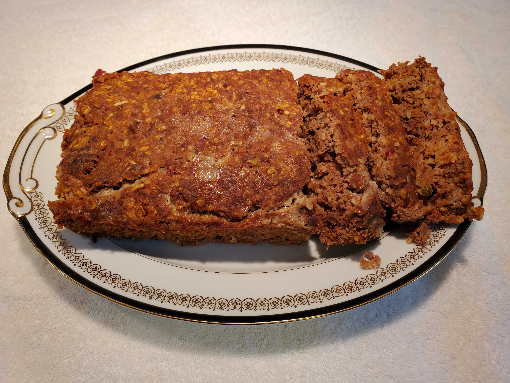

This is a recipe for "Hazel's Meat Loaf"
Ingredients
- 1 1/2 lb. of Food Lion 93% Lean 7% Fat Ground Beef.
- 1 cup of Premium Hunt's Seasoned Tomato Sauce for Meat Loaf.
- 2 eggs beaten.
- 1/4 tsp. of pepper.
- 2 tsp. of salt.
- 1/4 cup of BADIA Chopped Onion.
- 3/4 cup of uncooked Quaker Oats, 100% Whole Grain, Quick 1-Minute.
Directions
- Combine ingredients in 3 qt. or larger bowl using clean hands.
- Pack ingredients into a meat loaf pan.
- Preheat oven to 350 degrees.
- Bake for 1 hour.
- Enjoy.
Download Recipe